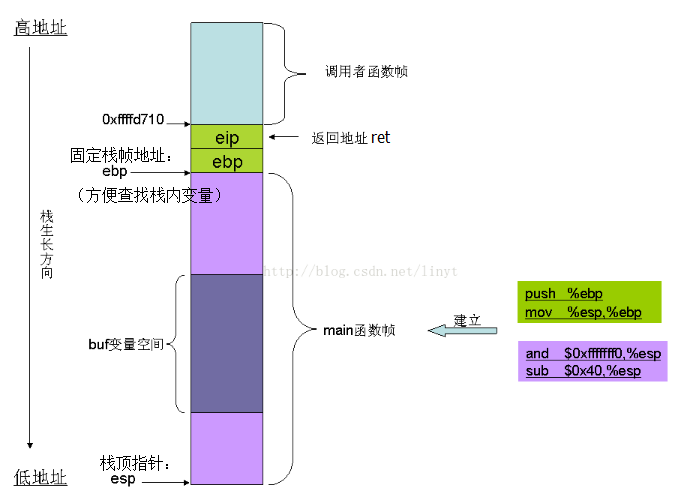

信息安全小结
KING
Jun 26, 2017
Dec 06, 2017 UPDATED
简要涉及Web、网络、Linux等攻击原理和防御方式。
Web
- 什么是盒模型
CSS盒子模式即具备这些属性：内容(content)、内边距(padding)、边框(border)、外边距(margin)。
这些属性我们可以用日常生活中的常见事物——盒子作一个比喻来理解，所以叫它盒子模式。
- CSS定位方式及其特性
百度百科：CSS定位
HTML和CSS高级指南之二——定位详解
static 默认值，遵循基本的定位规定，不能通过z-index进行层次分级。
relative 不脱离文档流，参考自身静态位置通过 top(上),bottom（下）,left（左）,right（右） 定位，并且可以通过z-index进行层次分级。
absolute 脱离文档流，通过 top,bottom,left,right 定位。选取其最近的父级定位元素，当所有父级 position 为 static 时，absolute元素将以body坐标原点进行定位，可以通过z-index进行层次分级。
fixed 固定定位，参考对像是可视窗口而并非是body或是父级元素。可通过z-index进行层次分级。 - 点击劫持/利用CSS盗取浏览历史
利用不可见的iframe覆盖在伪装页面上，骗取用户对实际页面进行操作。
利用浏览器对超链接不同状态下（未访问状态、鼠标hover/focus状态、已访问状态）链接的颜色的不同，可以知道用户的访问历史。
HTTPS
- HTTPS的作用
在HTTP协议的基础上添加了SSL层（Secure Socket Layer），提供数据加密和身份验证功能，保证数据传输的安全性和完整性。
SSL协议位于TCP/IP协议与各种应用层协议之间，为数据通讯提供安全支持。SSL协议可分为两层：SSL记录协议（SSL Record Protocol）：它建立在可靠的传输协议（如TCP）之上，为高层协议提供数据封装、压缩、加密等基本功能的支持。SSL握手协议（SSL Handshake Protocol）：它建立在SSL记录协议之上，用于在实际的数据传输开始前，通讯双方进行身份认证、协商加密算法、交换加密密钥等。
具体作用：- 保障用户隐私信息安全：SSL证书让网站实现加密传输，可以很好的防止用户隐私信息如用户名、密码、交易记录、居住信息等被窃取和纂改。比如电商网站安装SSL证书，就可以有效保障你登录电商网站支付时提交的用户名密码的安全。
- 帮助用户识别钓鱼网站：SSL证书可以认证服务器真实身份，可以有效的区别钓鱼网站和官方网站。网站部署全球信任的SSL证书后，浏览器内置安全机制，实时查验证书状态，通过浏览器向用户展示网站认证信息，让用户轻松识别网站真实身份，防止钓鱼网站仿冒。
- 利于网站SEO优化：因为部署了SSL证书的网站相比没有部署SSL证书的网站更加可信，更加安全，可以有效的保障用户的利益不受侵害。因此搜索引擎如谷歌，百度站在确保用户信息安全的角度，都在大力倡导网站部署SSL证书实现https加密访问。在搜索、展现、排序方面也给予部署了SSL证书网站优待。
- 提升公司品牌形象和可信度：网站部署SSL证书，让您的网站与其他网站与众不同。部署了SSL证书的网站会在浏览器地址栏显示https绿色安全小锁，如果是部署的EV SSL证书还会显示绿色地址栏和单位名称。可告诉用户其访问的是安全、可信的站点，可以放心的进行操作和交易，有效提升公司的品牌信息和可信度。
- CSRF是什么，如何利用HTTPS防御CSRF
了解XSS/CSRF
CSRF攻击的主要目的是让用户在不知情的情况下攻击用户当前已登录的某个网站，类似于钓鱼。如用户当前已经登录了邮箱，或bbs，同时用户又登录另外一个已经被攻击者控制的站点，我们姑且叫它钓鱼网站。用户一登陆钓鱼网站，此时可能就会触发一个js的点击事件，构造一个bbs发帖的请求，去往你的bbs发帖，由于当前你的浏览器状态已经是登陆状态，所以session登陆cookie信息都会跟正常的请求一样，纯天然的利用当前的登陆状态，让用户在不知情的情况下，攻击者完成了攻击。
CSRF防御- 通过 referer、token 或者 验证码 来检测用户提交。
- 尽量不要在页面的链接中暴露用户隐私信息。
- 对于用户修改删除等操作最好都使用post操作 。
- 避免全站通用的cookie，严格设置cookie的域。
XSS
- XSS原理、如何防御
了解XSS/CSRF
攻击者往Web页面里插入恶意Script代码，当用户浏览该页之时，嵌入其中Web里面的Script代码会被执行，从而达到恶意攻击用户的特殊目的。
防御：- 编码：不能对用户所有输入保持原样对用户输入的数据写入HTML文档
- 过滤：把输入不合法的过滤掉，保持安全性
- HTTPONLY属性作用
利用HTTP-only Cookie缓解XSS之痛
为Cookie提供的一个新属性，阻止客户端脚本访问Cookie，缓解跨站点脚本攻击带来的信息泄露风险。
使用HTTP-only Cookie后，Web 站点就能排除cookie中的敏感信息被发送给黑客的计算机或者使用脚本的Web站点的可能性。 - Ajax异步特性
Ajax知识体系大梳理非常全，而且讲到浏览器四种线程之间的配合
AJAX工作原理及其优缺点简版
Ajax其核心有JavaScript、XMLHTTPRequest、DOM对象组成，通过XmlHttpRequest对象来向服务器发异步请求，从服务器获得数据，然后用JavaScript来操作DOM而更新页面。
与传统的web应用比较
传统的Web应用交互由用户触发一个HTTP请求到服务器,服务器对其进行处理后再返回一个新的HTHL页到客户端, 每当服务器处理客户端提交的请求时,客户都只能空闲等待,并且哪怕只是一次很小的交互、只需从服务器端得到很简单的一个数据,都要返回一个完整的HTML页,而用户每次都要浪费时间和带宽去重新读取整个页面。这个做法浪费了许多带宽，由于每次应用的交互都需要向服务器发送请求，应用的响应时间就依赖于服务器的响应时间。这导致了用户界面的响应比本地应用慢得多。
与此不同，AJAX应用可以仅向服务器发送并取回必需的数据，它使用SOAP或其它一些基于XML的Web Service接口，并在客户端采用JavaScript处理来自服务器的响应。因为在服务器和浏览器之间交换的数据大量减少，结果我们就能看到响应更快的应用。同时很多的处理工作可以在发出请求的客户端机器上完成，所以Web服务器的处理时间也减少了。
SQL注入
SQL注入原理讲解，很不错！
本质：保证select查询的where语句恒真，绕过条件筛选，最终实现直接查询到结果，比如1
2
3SELECT job_id, job_desc, min_lvl, max_lvl
FROM jobs
WHERE (job_id = 1)
在WHERE (job_id = 1)后添加OR 1=1修改为WHERE (job_id = 1) OR 1 = 1，修改后的select语句等同：1
2SELECT job_id, job_desc, min_lvl, max_lvl
FROM jobs
如何防御，总的来说有以下几点：
- 永远不要信任用户的输入，要对用户的输入进行校验，可以通过正则表达式，或限制长度，对单引号和双”-“进行转换等。
- 永远不要使用动态拼装SQL，可以使用参数化的SQL或者直接使用存储过程进行数据查询存取。
- 永远不要使用管理员权限的数据库连接，为每个应用使用单独的权限有限的数据库连接。
- 不要把机密信息明文存放，请加密或者hash掉密码和敏感的信息。
- 应用的异常信息应该给出尽可能少的提示，最好使用自定义的错误信息对原始错误信息进行包装，把异常信息存放在独立的表中。
nc（NetCat）
Linux nc命令用法收集nc -l 1234是什么意思
作为服务器监听本机的1234端口
Linux权限
chmod 4755 some_binary的作用
改变some_binary文件的权限，文件所有者（owner）权限为可读可写可执行，用户组（group）和其他人（others）的权限为可读不可写可执行，同时执行者有SUID权限，即执行该文件时临时拥有文件所有者（owner）的权限。
参考：
Linux权限入门：Linux下用户组、文件权限详解
Linux特殊权限标志位： Linux文件权限标志uid gid
IP/ICMP
- 通常的IP头最开始的01000101表示什么意思
表示IP版本和头部长度，0100表示ipv4，0101表示头部长度为5，单位为4字节，即头部长度为20字节 - 为什么IP需要分片
在IP层一个IP报文包括头部最大长度为65535字节，但是在其他层，比如链路层以太网最大的帧长度为1500，这种情况下为了保存数据的完整，就必须将IP进行分片。 - TearDrop的原理（IP分片攻击）
什么是Teardrop攻击
原理：攻击者A给受害者B发送一些分片IP报文，并且故意将“分片偏移”字段（第13位）设置成错误的值(既可与上一分片数据重叠，也可错开)，B在组合这种含有重叠偏移的伪造分片报文时，会导致系统崩溃。
防御：网络安全设备将接收到的分片报文先放入缓存中，并根据源IP地址和目的IP地址对报文进行分组，源IP地址和目的IP地址均相同的报文归入同一组，然后对每组IP报文的相关分片信息进行检查，丢弃分片信息存在错误的报文。为了防止缓存益处，当缓存快要存满是，直接丢弃后续分片报文。 - ICMP重定向攻击原理
ICMP重定向原理
ICMP重定向报文是ICMP控制报文中的一种。在特定的情况下，当路由器检测到一台机器使用非优化路由的时候，它会向该主机发送一个ICMP重定向报文，请求主机改变路由。
attacker伪装路由器router发送ICMP重定向包给受害者victim,通知其改变发包地址为other，受害者victim收到重定向包后将包发到改变自己的地址到指定的other处。
Nmap
- nmap判断OS原理
Nmap使用TCP/IP协议栈指纹来识别不同的操作系统和设备。在RFC规范中，有些地方对TCP/IP的实现并没有强制规定，由此不同的TCP/IP方案中可能都有自己的特定方式。Nmap主要是根据这些细节上的差异来判断操作系统的类型的。
具体实现方式如下：
Nmap内部包含了2600多已知系统的指纹特征（在文件nmap-os-db文件中）。将此指纹数据库作为进行指纹对比的样本库。
分别挑选一个open和closed的端口，向其发送经过精心设计的TCP/UDP/ICMP数据包，根据返回的数据包生成一份系统指纹。
将探测生成的指纹与nmap-os-db中指纹进行对比，查找匹配的系统。如果无法匹配，以概率形式列举出可能的系统。 - nmap connect() 与nmap syn的异同
TCP SYN scanning:
这是Nmap默认的扫描方式，通常被称作半开放扫描（Half-open scanning）。该方式发送SYN到目标端口，如果收到SYN/ACK回复，那么判断端口是开放的；如果收到RST包，说明该端口是关闭的。如果没有收到回复，那么判断该端口被屏蔽（Filtered）。因为该方式仅发送SYN包对目标主机的特定端口，但不建立的完整的TCP连接，所以相对比较隐蔽，而且效率比较高，适用范围广。
TCP connect scanning:
TCP connect方式使用系统网络API connect向目标主机的端口发起连接，如果无法连接，说明该端口关闭。该方式扫描速度比较慢，而且由于建立完整的TCP连接会在目标机上留下记录信息，不够隐蔽。所以，TCP connect是TCP SYN无法使用才考虑选择的方式。 - nmap idle scan原理
伪造身份去扫描目标网络，所以看起来就像是无辜的Zombie主机在扫描。
1.探查Zombie的IP ID并记录下来。
2.在Zombie主机上伪造一个包，然后把包发送给目标主机端口。根据端口的状态，目标主机可能会也有可能不会导致Zombie主机IP ID值增加。
3.再探查Zombie主机的IP ID。比较两次得到IP ID值就能分析出目标的端口信息。
iptables
- NAT原理
NAT和端口映射的区别
NAT基本原理及应用
将一台外网IP地址机器的多个端口映射到内网不同机器上的不同端口 - 熟知端口
- 21 FTP 文件传输协议的端口号
- 23 Telnet远程终端协议的端口号
- 25 SMTP简单邮件传输协议的端口号
- 53 DNS域服务器所开放的端口
- 69 TFTP简单文件传送协议的端口号
- 80 HTTP超文本传输协议的端口号
- 443 HTTPS（Hyper Text Transfer Protocol over Secure Socket Layer）端口号
- 110 POP3邮局协议版本3的端口号
- iptables 4表5链及其作用
4个表:filter,nat,mangle,raw，默认表是filter（没有指定表的时候就是filter表）。
表的处理优先级：raw>mangle>nat>filter。- filter：包过滤
- nat:用于nat功能（端口映射，地址映射等）
- mangle:包修改
- raw:设置raw时一般是为了不再让iptables做数据包的链接跟踪处理，提高性能
5个链：PREROUTING,INPUT,FORWARD,OUTPUT,POSTROUTING。 - PREROUTING:数据包进入路由表之前
- INPUT:通过路由表后目标为本机
- FORWARDING:通过路由表后，目标不为本机
- OUTPUT:由本机产生，向外转发
- POSTROUTIONG:发送到网卡接口之前。
- iptables实例
iptables超全详解
iptables使用范例详解
利用iptables禁止外部访问，内部可访问https网站1
2
3
4
5# 以下命令存在的一些问题：
sudo iptables -P INPUT DROP #设置所有INPUT链默认规则为丢弃所有包，即不接受任何发至本机的包
sudo iptables -A INPUT -p tcp -sport 80 -j ACCEPT #接收所有协议为tcp源端口为80的发至本机的包
# 由于https的端口地址为443而不是80，所以应该将80换为443
# 同时，output不做任何限制，只用对input链做出规则即可实现限制某种访问
Rootkit
- 什么是Rootkit
百度百科：Rootkit
Rootkit是一种特殊的恶意软件，它的功能是在安装目标上隐藏自身及指定的文件、进程和网络链接等信息;
Rootkit一般都和木马、后门等其他恶意程序结合使用;
Rootkit通过加载特殊的驱动，修改系统内核，进而达到隐藏信息的目的。 - 系统调用劫持过程
系统调用的实现原理
linux 系统调用中断劫持实现—原理和代码。
Linux系统调用_详细全过程(PPT)
系统调用的正常过程为：- 保存堆栈现场
- 在调用号表中获取该系统调用名对应的系统调用号，将系统调用号存入eax寄存器
- CPU通过int 0x80软中断指令发起中断转入内核态
- 在内核中调用system_call()，然后根据eax中已存的系统调用号在system_call_table（系统调用表）中找到对应该系统调用号（亦系统调用）的routine（服务例程）地址
- 执行该routine
- 执行完该routine后接着执行ret_from_sys_call()例程
- 恢复堆栈，最后返回到用户态。本次系统调用过程完成。
系统调用劫持即修改routine的地址，指向攻击者设定的函数地址即可。
在linux中使用0x80 异常实现系统调用，因此，主要的实现路径：获得中断向量表->获得系统调用中断处理函数地址->获得系统调用符号表->修改对应变量的偏移值指向新的系统调用程序(后门程序)。
/proc作用，ps命令工作原理
Linux proc详解proc是Linux内核信息的抽象文件接口，大量内核中的信息以及可调参数都被作为常规文件映射到一个目录树中，这样我们就可以简单直接的通过echo或cat这样的文件操作命令对系统信息进行查取和调整了。同时proc也提供了一个接口，使得我们自己的内核模块或用户态程序可以通过proc进行参数的传递。在当今的Linux系统中，大量的系统工具也通过proc获取内核参数，例如ps、lspci等等，没有proc它们将可能不能正常工作。
Linux ps命令示例说明ps命令是最基本同时也是非常强大的进程查看命令。使用该命令可以确定有哪些进程正在运行和运行的状态、进程是否结束、进程有没有僵死、哪些进程占用了过多资源等等。
在/proc目录下存在大量以数字为名的子目录，这个数字就是相关进程的进程ID，这些目录就是系统当前运行进程的proc抽象。每一个目录都以相关联的活动系统进程PID为目录名，在目录下包含了一些文件，用于显示进程相关的信息，其中有一个status文件保存着当前该进程状态总览，包含进程名字、当前状态和各种信息统计。ps命令就是通过读取每一个进程目录下的status文件，并最终整理输出。
Buffer Overflow
- 发生函数调用时的堆栈结构（通用）
 - 如何利用Buffer Overflow获取Rootshell
由于buf变量在栈中的位置，当buf变量发生溢出时，就会往高地址空间覆盖。先是覆盖main函数的其它局部变量，然后是父函数的ebp，再次是当前函数的返回地址eip，最后是父函数的栈空间。
在buf中存放着精心设置过的内容，比如修改后的返回地址以及shellcode，同时将修改后返回地址覆盖在原返回地址处指向shellcode，当函数返回时，ret指令将0xffffd710弹出到寄存器，结果就是执行shellcode。
DOS(拒绝服务攻击总结): SYN Foold ，IP欺骗DOS ，UDP洪水，Ping洪流 ，teardrop ，Land ，Smurf ，Fraggle 攻击 原理